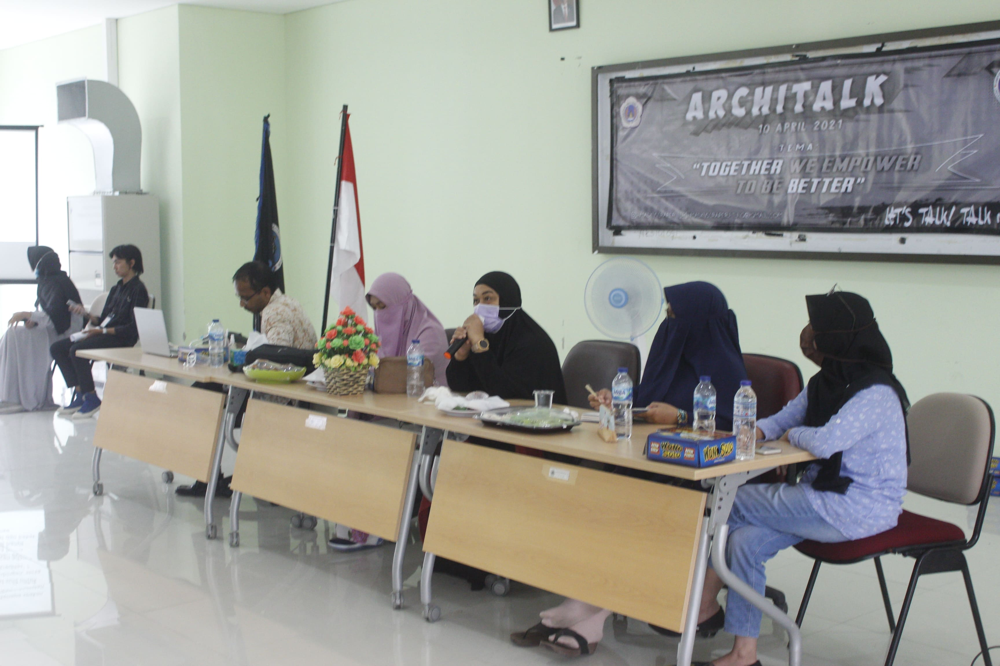
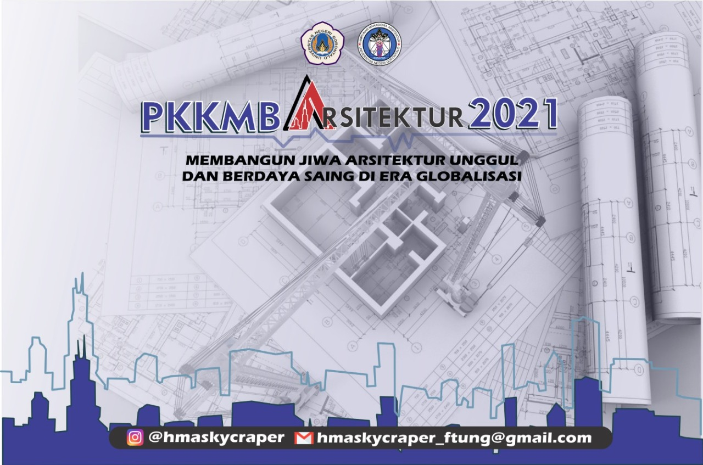

Undergraduate Student in Architectural Engineering with a creative mind, positive vibes and curious about a new thing
I'm eager to learn and contribute in event project, especially in design division. I want to practice my
expertise to establish and to develop an event or project in Indonesia.
I'm a creative person who love to design
I'm a courious person to know and learn a new things.
I'm a fast worker who work systematically, accurately, neatly, and love working under preassure.
Experience
International Model United Nations
Official Campus Ambassador
Understand problems and give voice to current global issues
Promoting the IMUN Conference program in various schools/universities & getting participants to join the conference.
Assist 2 IMUN Conference participants in the process of participating in the IMUN Conference (Registration, Payment, etc.)
Architalk 2021
Project Officer Division
Inviting 100 participants of architectural engineering students at Universitas Negeri Gorontalo
Co-ordinated the event agenda with the other division
Inviting speakers, namely 4 lecturers from the architectural engineering at Universitas Negeri Gorontalo

PKKMB 2021
Documentation
Making the template for presentation with 20+ slides
Checking the task of 88 new students in Architectural Engineering

Project
Mural Art
Nurris Coffee | November 2021- Desember 2021
Painting the walls of the cafe so that it looks interesting to visit